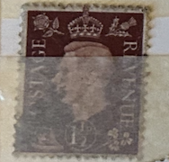
| SOURCE | TITLE| IMAGE MATCH | click to source page |
| eBay | Postage Revenue ~ King George VI ~ Brown 1½D Stamp ~ Posted/Used ~ c.1940's ~ 05 | eBay | 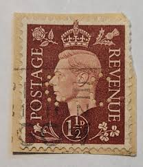 |
| eBay | R- 1881-1947 Great Britain stamps on album pages - 30 total | eBay | 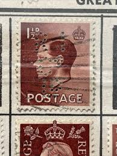 |
| eBay | Royalty Used British George VI Stamps for sale | eBay | 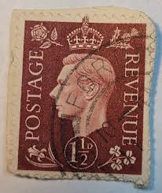 |
| eBay | Brown Postage Topical Postal Stamps for sale | eBay | 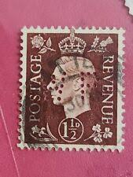 |
| eBay | 2d Denomination British George VI Stamps for sale | eBay | 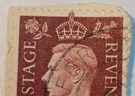 |
| eBay | Postage Revenue Foreign 1 1/2d Stamp Used - #A347 | eBay | 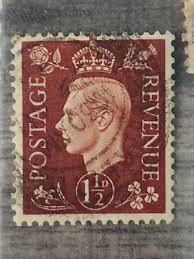 |
| eBay UK | Postage Revenue Foreign 1 1/2d Stamp Used - #A347 | eBay UK | 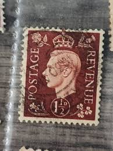 |
| HipStamp | Great Britain #237 1 1/2P King George 6, used VF | Great Britain, General Issue Stamp / HipStamp | 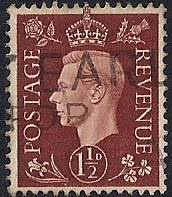 |
| eBay | Postage Revenue ~ King George VI ~ Brown 1½D Stamp ~ Posted/Used ~ c.1940's ~ S5 | eBay | 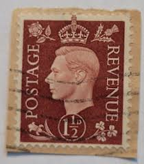 |
| Etsy | King George VI Stamp: 1937 Red Brown 1 1/2 Penny, Scott #237 - Etsy New Zealand | 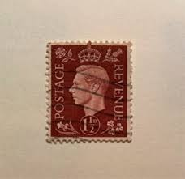 |
| eBay | Postage Revenue ~ King George VI ~ Brown 1½D Stamp ~ Posted/Used ~ 1940's ~ Z88 | eBay | 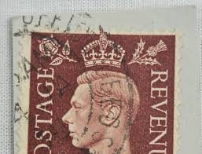 |
| eBay | Postage Revenue ~ King George VI ~ Brown 1½D Stamp ~ Posted/Used ~ c.1940's ~Z17 | eBay | 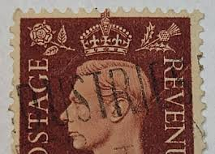 |
| HipStamp | Great Britain #283 King George VI; Used (0.45) | Great Britain, General Issue Stamp / HipStamp | 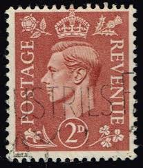 |
| Stamp Community Forum | GB : Official Perfins Identified Here. - Page 6 - Stamp Community Forum | 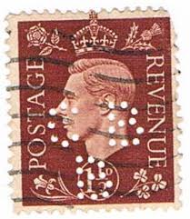 |
| eBay | Revenue Foreign 1 1/2d Stamp Used - #A158 | eBay | 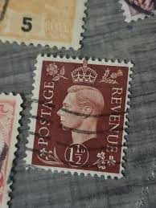 |
| Delcampe | Oman - Oman Sc# 38 Used 1951 2a on 2p overprints King George VI | 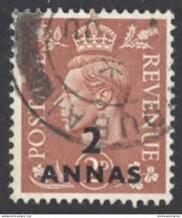 |
| eBay | Postage Revenue ~ King George VI ~ Brown 1½D Stamp ~ Posted/Used ~ c.1940's ~Z16 | eBay | 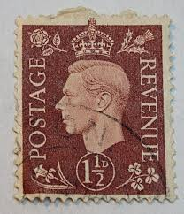 |
| eBay | Postage Revenue ~ King George VI ~ Brown 1½D Stamp ~ Posted/Used ~ c.1940's ~S27 | eBay | 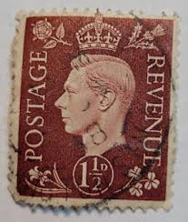 |
| PicClick | LOT OF 20 King George Vi 2 1/2 D Postage Stamps Great Britain - U Ww 2 Era $15.99 - PicClick | 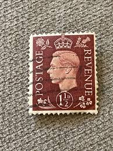 |
| eBay | Postage Revenue ~ King George VI ~ Brown 1½D Stamp ~ Posted/Used ~ c.1940's ~ 04 | eBay | 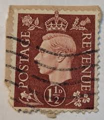 |
| HipStamp | I.B) George VI Postal : Paquebot Postmark (Port Said) | Great Britain, Stamp / HipStamp | 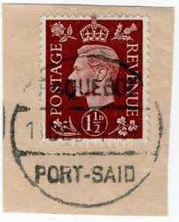 |
| eBay | Royalty British George V Stamps 1/- Denomination for sale | eBay | 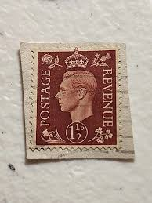 |
| eBay | Postage Revenue ~ King George VI ~ Brown 1½D Stamp ~ Posted/Used ~ c.1940's ~ S2 | eBay | 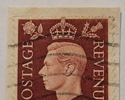 |
| eBay | Postage Revenue ~ King George VI ~ Brown 1½D Stamp ~ Posted/Used ~ 1940's ~ Z97 | eBay | 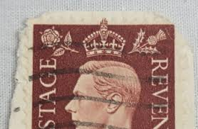 |
| eBay | 1937-39 Great Britain SC# 237a - F VF - King George VI - Used -1 | eBay | 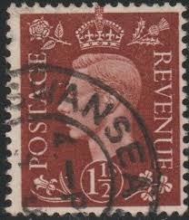 |
| eBay | 1937 King George VI Great Britain and Northern Ireland | eBay | 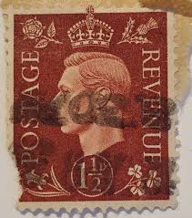 |
| eBay | 2d Denomination British George VI Stamps | eBay | 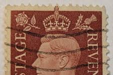 |
| eBay | 1929 GREAT BRITAIN Mi. 173x GEORGE V 2 1/2p USED STAMP | eBay | 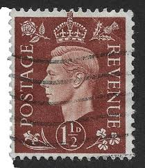 |
| eBay | Royalty 1p British George VI Stamps for sale | eBay | 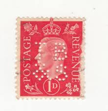 |
| eBay | Postage Revenue ~ King George VI ~ Brown 1½D Stamp ~ Posted/Used ~ c.1940's ~S18 | eBay | 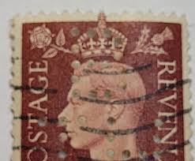 |
| eBay | 2d Denomination British George VI Stamps for sale | eBay | 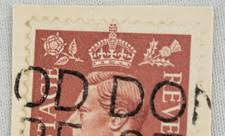 |
| eBay | Great Britain Stamp King George VI 1 1/2d Used Maroon | eBay | 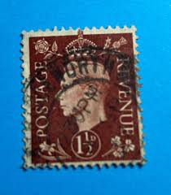 |
| eBay | Brown British George VI Stamps for sale | eBay | 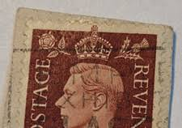 |
| The RainKey | England 1930'sPostage Revenue One half dollarRK-WS-967 – The RainKey | 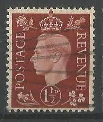 |
| Bill Barrell Ltd | Propaganda Forgeries. – Bill Barrell Ltd | 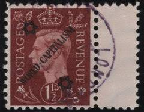 |
| eBay | Nice Vintage Used Postage Revenue 2 D Stamp, Great Britain King George TKS48* | eBay | 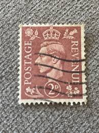 |
| eBay | Postage Revenue Foreign 1 1/2d Brown Stamp Used - #A142 | eBay | 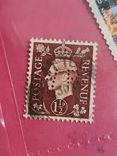 |
| eBay | Postage Revenue ~ King George VI ~ Brown 1½D Stamp ~ Posted/Used ~ c.1940's ~S20 | eBay | 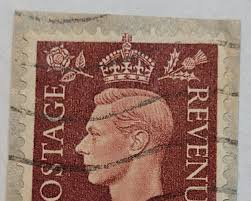 |
| eBay | Postage Revenue ~ King George VI ~ Brown 1½D Stamp ~ Posted/Used ~ c.1940's ~Z12 | eBay | 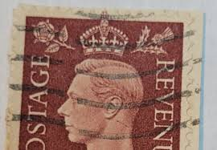 |
| eBay | Postage Revenue ~ King George VI ~ Brown 1½D Stamp ~ Posted ~ c.1940's ~ B386 | eBay | 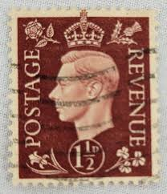 |
| eBay | Nice Vintage Used Postage Revenue 2 D Stamp, Great Britain King George TKS195 | eBay | 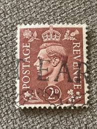 |
| eBay | GREAT BRITAIN SG-464, SCOTT # 237 USED Stamp | eBay | 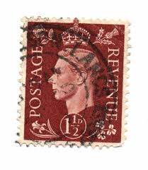 |
| eBay | 1938 UK 1 1/2d Postage Revenue Stamp - King George VI - Used | eBay | 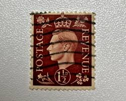 |
| eBay | Postage Revenue Foreign 1 1/2d Stamp Used - #A331 | eBay | 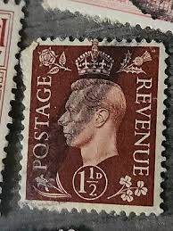 |
| eBay | Royalty 1/- Denomination British George VI Stamps for sale | eBay | 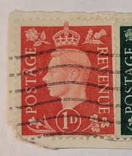 |
| eBay UK | Decimal Great Britain George VI Stamps for sale | eBay UK | 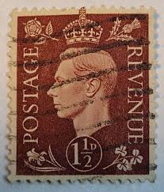 |
| eBay | 1935 Great Britain UK 3p PENCE Sterling Silver Coin STAMP 1937 WW2 LOT | eBay | 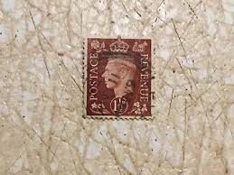 |
| eBay | 1938 UK Postage/Revenue ~ King George VI ~ Red 1 1/2 Stamp TKS219* | eBay | 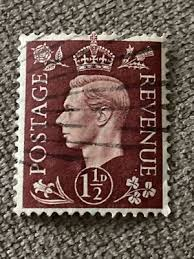 |
| Shutterstock | 182,864 Timbre Enveloppe Royalty-Free Images, Stock Photos & Pictures | Shutterstock | 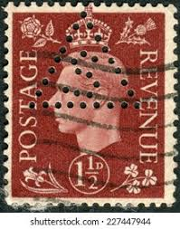 |
| eBay | Great Britain Foreign Unchecked Stamp Used - #F204 | eBay | |
| eBay | 1p British George VI Stamps for sale | eBay | |
| eBay | Postage Revenue ~ King George VI ~ Brown 1½D Stamp ~ Posted/Used ~ c.1940's ~ S4 | eBay | |
| allnumis.com | 1 1/2 pence 1937 - King George VI, 1937 - Great Britain - Stamp - 53993 | |
| eBay | Nice Vintage Used Postage Revenue 1 D Stamp, GOOD COND - 1940's | eBay Australia | |
| eBay | GB King George VI 1937 1½d Red-brown, SG 464, Control B/37, Cyl 30 dot. Mint | eBay | |
| Etsy | King George VI Stamp: 1937 Red Brown 1 1/2 Penny, Scott #237 - Etsy | |
| eBay | Postage Revenue ~ King George VI ~ Brown 1½D Stamp ~ Posted ~ c.1940's ~ B386 | eBay | |
| eBay | Germany 1944 WORLD WAR II Propaganda FORGERY for Great Britain Stamp | eBay | |
| eBay | Royalty Used 1/- Denomination British George VI Stamps for sale | eBay | |
| HipStamp | Great Britain 283 King George VI 1950 | Great Britain, General Issue Stamp / HipStamp |